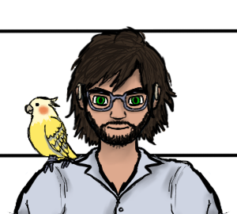
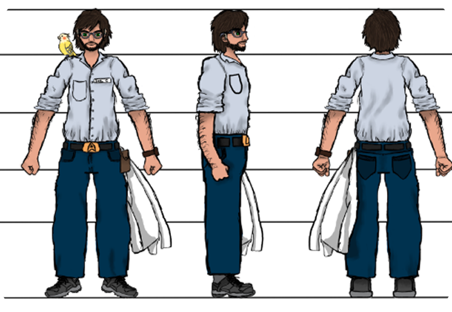

Expediente · ONU
Carl Hargrove
Edad: 35 años
Profesión: Ingeniero de Sistemas y Mecatrónica

Expediente · ONU
Edad: 35 años
Profesión: Ingeniero de Sistemas y Mecatrónica

Posee un agudo sentido de la observación que le permite detectar intenciones ocultas o mentiras al instante. Es una persona de buen corazón que busca ayudar a los demás; la desconfianza acumulada por traiciones pasadas lo lleva a ser extremadamente paranoico y cauteloso con su espacio personal, prefiriendo la soledad o la única compañía de su mascota.

A lo largo de su carrera, el ingeniero Carl Hargrove ha perfeccionado e implementado diferentes avances tecnológicos, con el propósito de mejorar la vida cotidiana y resolver proyectos de grado gubernamental.
Es un hombre serio pero visionario, entusiasta de la ciencia ficción y las cosas sobrenaturales o fuera de este mundo. Esta afición, junto con sus conocimientos tecnológicos, le ha permitido desarrollar múltiples soluciones para resolver diferentes problemas a nivel global, haciéndolo reconocido como el padre de la tecnología y robótica moderna. Esta fama lo ha llevado a asociarse con varias naciones que han requerido sus servicios en muchas ocasiones.
A pesar de su éxito y deseo genuino de aportar su conocimiento al mundo, Carl era muy desconfiado, casi llegando al punto de ser paranoico. Le era fácil saber cuándo una persona está mintiendo o tiene malas intenciones y generalmente no se equivoca en sus suposiciones.
En ocasiones anteriores había trabajado con colegas que no daban la talla en su trabajo o simplemente buscaban ganarse el crédito de esfuerzos que no eran suyos.
Por esa razón prefería trabajar solo o, en su defecto, en compañía de Pitty, su pequeño loro mascota.
Sin embargo, las cosas podrían cambiar luego de haber sido llamado a una reunión importante de la ONU para colaborar con ellos en un nuevo proyecto.